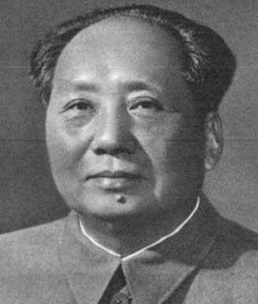

20 MAO TSE-TUNG 1893-1976
Mao Tse-Tung memimpin
partai Komunis ke puncak kekuasaan di Cina, dan dalam jangka
masa dua puluh tujuh tahun sesudah memegang kendali
pimpinan, perubahan-perubahan menakjubkan dan berjangka jauh
terjadilah dalam sejarah suatu bangsa yang begitu besar
jumlahnya.
Mao Tse-Tung dilahirkan tahun 1893 di desa Shao-shan di
propinsi Hunan, Cina. Ayahnya petani agak berada. Di tahun
1911 tatkala Mao masih mahasiswa usia sembilan belas tahun,
revolusi pecah memporakporandakan dinasti Ch'ing yang memang
sudah melapuk dan brengsek, padahal dinasti ini memerintah
Cina sejak abad ke-17. Hanya dalam tempo beberapa bulan saja
pemerintahan kaisar sudah terhalau dan terjungkir, dan Cina
diproklamirkan sebagai sebuah republik. Malangnya,
pemimpin-pemimpin revolusi tidak mampu mendirikan suatu
pemerintahan yang kompak dan stabil dan revolusi ditandai
oleh keresahan dan perang saudara dalam jangka waktu lama,
boleh dibilang berlangsung hingga tahun 1949.
Selaku remaja muda usia, Mao secara pasti menempuh paham
kiri dalam pandangan politiknya dan pada tahun 1920 dia
betul-betul sudah jadi Marxis tulen. Di tahun 1921 dia
merupakan salah seorang dari dua belas pendiri partai
Komunis Cina. Tetapi peningkatannya menuju puncak tertinggi
kepemimpinan partai berjalan lambat, sehingga baru di tahun
1935 dia menjadi ketua partai.
Sementara itu, secara keseluruhan pun partai Komunis Cina
jalannya merangkak, berliku-liku, terguncang-guncang dalam
usahanya memegang kekuasaan. Partai menderita banyak
kemunduran di tahun 1927 dan tahun 1934, tetapi bagaimanapun
dia mampu bertahan dan hidup terus. Sesudah tahun 1935, di
bawah kepemimpinan Mao, kekuatan partai secara mantap
meningkat dan berkembang terus. Di tahun 1947, partai
Komunis Cina sudah siap tempur menumbangkan pemerintahan
partai Nasionalis pimpinan Chiang Kai-Shek. Di tahun 1949,
pasukannya merebut kemenangan gilang-gemilang dan partai
Komunis menguasai mutlak seluruh daratan Cina.
Cina pada saat Mao selaku pemimpin partai Komunis
memegang tampuk pemerintahan sesudah melalui pertempuran
sengit selama tiga puluh delapan tahun, hampir sebuah Cina
yang sudah tercabik-cabik, compang-camping, miskin papa dan
tradisional dan terbelakang dan buta huruf, sehingga
tampaknya karier gelap membayangi Mao dengan pelbagai rupa
rintangan dan jalan akhir yang buntu.
Tetapi, kenyataan berlawanan dengan itu, karena berkat
pengaruhnya yang luar biasa besar pada massa, kesemua
kekurangan itu bukannya akhir melainkan justru awal dari
karier kepemimpinannya, karena pada saat wafatnya tahun 1976
praktis Mao sudah merombak total seluruh Cina. Salah satu
segi perombakan secara umum adalah modernisasi negeri,
khususnya industrialisasi, peningkatan taraf pendidikan yang
luar biasa cepat serta perbaikan tingkat kesehatan rakyat
yang menggemparkan. Perubahan-perubahan ini, betapapun
pentingnya, bukanlah menjadi alasan utama menempatkan Mao
dalam urutan daftar buku ini karena negeri-negeri lain pun
dalam saat yang berbarengan melakukan hal serupa.
Segi keberhasilan lainnya oleh Cina di bawah Mao adalah
perubahan sistem ekonominya dari sistem kapitalis ke sistem
sosialis. Secara politik, sudah barang tentu penggarapan ini
dilaksanakan lewat cara-cara totaliter yang keras. Tetapi
perlu diingat, lewat indoktrinasi dan penataran yang
intensif dan tak kenal lelah, Mao berhasil bukan saja
menggerakkan suatu revolusi ekonomi dan politik tetapi juga
revolusi sosial. Hanya dalam tempo seperempat abad telah
dapat dilakukan perombakan dalam hal kesetiaan terhadap
kefamilian yang sempit menjadi kesetiaan terhadap bangsa
secara keseluruhan. Perombakan ini mempunyai makna yang
teramat penting mengingat sepanjang sejarah sistem kesetiaan
dan ikatan kefamilian di Cina teramatlah kokohnya. Lebih
dari itu, pemerintah Cina melancarkan propaganda gigih
memerangi ideologi Kong Hu-Cu dan tampaknya usaha ini
mencapai sasarannya.
Tentu saja, bukan Mao seorang yang menentukan garis
politik pemerintah di bawah partai Komunis. Mao tidak pernah
memegang peranan seorang diri seperti halnya dilakukan oleh
Stalin di Uni Soviet. Tetapi, memang benar Mao merupakan
tokoh jauh lebih penting dari siapa pun dalam pemerintahan
di Cina hingga akhir hayatnya tahun 1976.
Salah satu proyek yang tak syak lagi merupakan tanggung
jawab utama Mao ialah apa yang terkenal dengan sebutan
"Lompatan jauh ke depan" di akhir tahun 50-an. Banyak
peninjau beranggapan bahwa proyek itu, termasuk
penitikberatan pada metode pengintensifan produksi dengan
penggunaan tenaga manusia, termasuk dalam skala kecil dalam
bentuk komune pertanian, sebagai suatu proyek yang gagal.
(Dalam banyak kejadian malah tidak digubris). Proyek lain
yang peroleh dukungan Mao, dengan risiko dapat tantangan
dari banyak pemimpin-pemimpin Cina lain, adalah "Revolusi
besar kebudayaan proletar" di akhir tahun 1960an. Ini
merupakan pertentangan tajam, dalam beberapa hal nyaris
mirip dengan perang saudara antara Mao dan pendukungnya di
satu pihak dengan golongan kepala batu partai Komunis yang
birokrasi di lain pihak.
Menarik untuk dicatat, Mao sudah berusia di pertengahan
umur enam puluhan tatkala garis politik "Lompatan jauh ke
depan" dilancarkan dan berumur lewat tujuh puluhan ketika
"Revolusi kebudayaan" digerakkan. Dan pada waktu langkah
pendekatan dengan Amerika Serikat terjadi, dia sudah berumur
hampir delapan puluh tahun.
Mulanya Mao berpegang pada pendapat, kaum buruh industri
di kota-kota merupakan basis terkuat penyokong partai
Komunis. Ini sejalan dengan teori Marx. Tetapi, sekitar
tahun 1952 Mao berkesimpulan --paling sedikit di Cina--
sokoguru partai berasal dari kaum tani, bukan buruh.
Anggapan ini ada dasarnya, karena selama pertempuran panjang
dan sengit dengan rejim Nasionalis, Mao selalu berada di
daerah pedesaan. Gagasan ini diterapkan tatkala dia menjadi
kepala negara. Misalnya, apabila tatkala Stalin berkuasa di
Rusia umumnya pembangunan dititikberatkan pada sektor
produksi industri, Mao umumnya menarik perhatian lebih besar
pada pembangunan sektor pertanian dan pedesaan. Meski
begitu, pembangunan industri Cina di bawah Mao maju dengan
pesatnya.
Bukan suatu yang mudah menilai arti penting yang
berjangka panjang dari seorang tokoh politik yang sejaman.
Memperhitungkan dalam urutan keberapa Mao harus muncul dalam
daftar buku ini, tak bisa kita mesti membikin perbandingan
dengan tokoh-tokoh penting lainnya. Mao Tse Tung mendapat
tempat dalam daftar urutan diatas George Washington, karena
perombakan-perombakan didalam negeri yang menjadi tanggung
jawab perbuatan Mao jauh lebih fundamental ketimbang apa
yang telah diperbuat oleh George Washington. Mao juga dapat
tempat lebih atas ketimbang Napoleon, Hitler dan Alexander
Yang Agung disebabkan pengaruh jangka panjang yang melekat
pada dirinya, dan ini jelas lebih besar dari yang dipunyai
mereka yang disebut lebih dulu.
Perbandingan nyata lain adalah antara Mao dan Lenin. Mao
memerintah dalam jangka waktu yang lebih panjang daripada
Lenin, lagipula didalam negeri yang jumlah penduduknya jauh
lebih banyak. (Kenyataan memang menunjukkan, masa
berkuasanya Mao melebihi jangka waktu penguasa mana pun
dalam sejarah!) Tetapi, Lenin mendahului Mao dan memancarkan
pengaruh kuat terhadap Mao, dan dengan jalan mendirikan
Komunisme di Rusia berarti dia mempersiapkan dan membuka
jalan bagi pembentukan Komunis berikutnya di Cina.
Orang yang karya usahanya hampir dapat disejajarkan
dengan Mao adalah Shih Huang Ti. Kedua-duanya orang Cina dan
keduanya arsitek perombakan-perombakan besar untuk
negerinya. Shih Huang Ti dapat tempat lebih atas dalam
urutan buku ini karena kita tahu pengaruhnya berlangsung
selama tidak kurang dari dua puluh dua abad. Meskipun
perubahan-perubahan yang dilaksanakan Mao besar kemungkinan
lebih penting dan lebih mendasar, tetapi kita belum tahu
pasti sampai berapa lama pengaruhnya bisa bertahan.
|